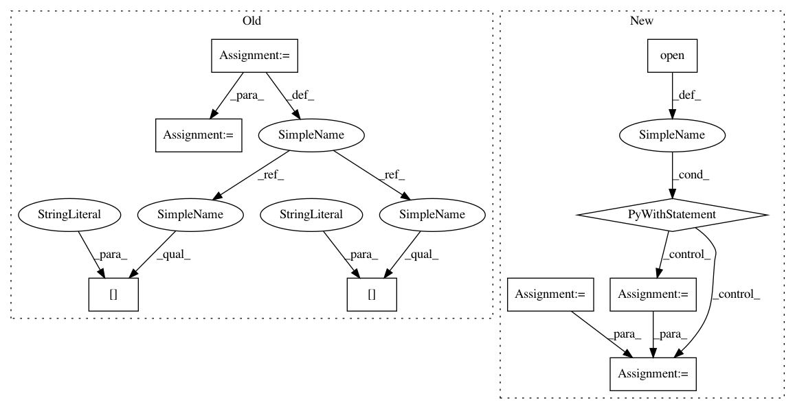

ed374e43783ff6cb58850aef22e4fa447ebbde61,src/pudl/cli.py,,main,#,32
Before Change
coloredlogs.install(fmt=log_format, level="INFO", logger=logger)
args = parse_command_line(sys.argv)
script_settings = pudl.settings.read_script_settings(args.settings_file)
pudl_settings = pudl.settings.init(
pudl_in=script_settings["pudl_in"],
pudl_out=script_settings["pudl_out"]
)
logger.info(f"Checking for input files in {pudl_settings["data_dir"]}")
pudl.helpers.verify_input_files(
ferc1_years=script_settings["ferc1_years"],
eia923_years=script_settings["eia923_years"],
eia860_years=script_settings["eia860_years"],
epacems_years=script_settings["epacems_years"],
epacems_states=script_settings["epacems_states"],
data_dir=pudl_settings["data_dir"],
)
pudl.init.init_db(ferc1_tables=script_settings["ferc1_tables"],
ferc1_years=script_settings["ferc1_years"],
eia923_tables=script_settings["eia923_tables"],
eia923_years=script_settings["eia923_years"],
eia860_tables=script_settings["eia860_tables"],
eia860_years=script_settings["eia860_years"],
epacems_years=script_settings["epacems_years"],
epacems_states=script_settings["epacems_states"],
epaipm_tables=script_settings["epaipm_tables"],
pudl_testing=script_settings["pudl_testing"],
pudl_settings=pudl_settings,
debug=script_settings["debug"],
csvdir=script_settings["csvdir"],
keep_csv=script_settings["keep_csv"])
if __name__ == "__main__":
After Change
coloredlogs.install(fmt=log_format, level="INFO", logger=logger)
args = parse_command_line(sys.argv)
with pathlib.Path(args.settings_file).open() as f:
script_settings = yaml.safe_load(f)
try:
pudl_in = script_settings["pudl_in"]
except KeyError:
pudl_in = pudl.workspace.setup.get_defaults()["pudl_in"]
In pattern: SUPERPATTERN
Frequency: 3
Non-data size: 9
Instances
Project Name: catalyst-cooperative/pudl
Commit Name: ed374e43783ff6cb58850aef22e4fa447ebbde61
Time: 2019-08-20
Author: cgosnell@catalyst.coop
File Name: src/pudl/cli.py
Class Name:
Method Name: main
Project Name: YerevaNN/mimic3-benchmarks
Commit Name: 5d353701dd56a1fc8abc15e4082e33b7bed2a241
Time: 2017-08-09
Author: harhro@gmail.com
File Name: mimic3models/split_train_val.py
Class Name:
Method Name:
Project Name: YerevaNN/mimic3-benchmarks
Commit Name: 7567cc646d258e40dde9790a28a9b264ccd494fb
Time: 2017-08-27
Author: harhro@gmail.com
File Name: mimic3models/split_train_val.py
Class Name:
Method Name:
Project Name: catalyst-cooperative/pudl
Commit Name: ed374e43783ff6cb58850aef22e4fa447ebbde61
Time: 2019-08-20
Author: cgosnell@catalyst.coop
File Name: src/pudl/cli.py
Class Name:
Method Name: main